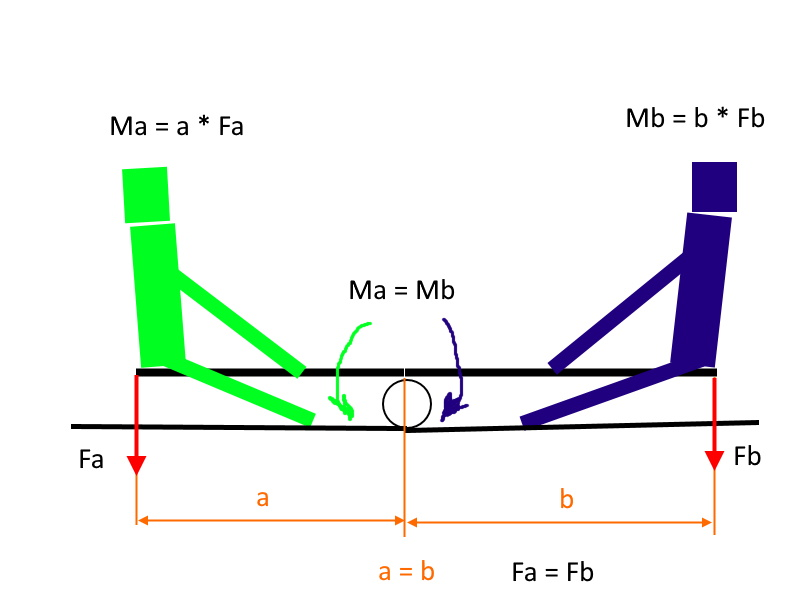
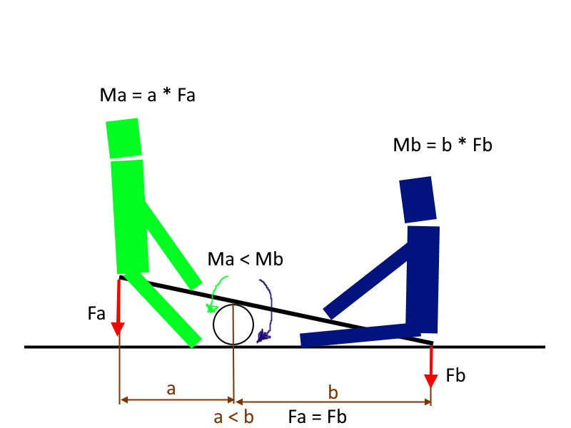

Это легко понять на примере качели: дети одинакового веса садятся на кчачели.
Качели остаются в равновесии и не смещаются.

Но если сместить точку опоры, то рычаг с одной стороны станет больше, а значит и моменты относиельно точки опоры окажутся разными. Качели повернуться в сторону больлшего момента.

В конструкции двигателей применен вал со смещенными относительно центра вала шестернями. Смещенные шестерни как раз и позволяют приложить усилие с разным плечом и создать тем самым разные по величине моменты силы относительно центра вала. Вал соединен с двумя цилиндрами через зубчатые передачи. Лопасти и стенки цилиндров образуют замкнутые камеры. Давление на лопасти цилиндров одинаковое в обоих направлениях. Но прилагается оно к валу с разным плечом. При этом оба цилиндра начинают проворачиваться в одном направлении (в сторону большего момента силы).

На картинке Mв2 больше Mв1, а сили F одинаковы. Благодаря этому вся система приходит во вращение.
При равномерном врещении вала контактирующие с ним шестерни будут вращаться в одном направлении с различными скоростями (поочереди ускоряясь и замедляясь)

Лопасти установленные в цилиндрах при этом поочередно сходятся и расходятся образуя камеры переменного объема. Такое движение соосно установленных роторов - общий принцип для двухроторных двигателей.

Вид двигателя в разрезе (двухтактный вариант)